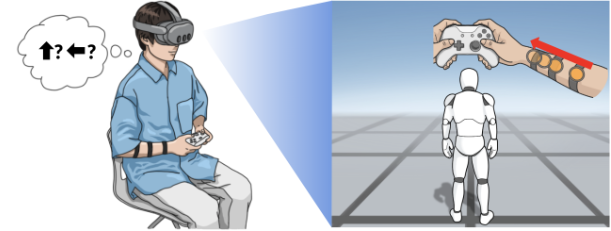
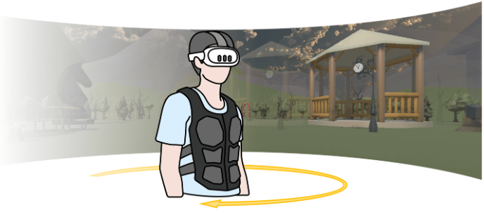

Posture-Adaptive Azimuthal Guidance via a Forearm Vibrotactile Interface for VR Navigation
IEEE Transactions on Visualization and Computer Graphics · IEEE ISMAR 2026
View publication ↗
Graduate Researcher · Korea University
I am Jaehyeong Hwang, a Graduate Researcher at the Augmented eXperience and Interactive Systems Laboratory (AXIS Lab), Korea University, advised by Prof. Chaeyong Park.
My research focuses on haptics, virtual reality, and human-computer interaction. I am interested in designing tactile interfaces that help people understand and navigate digital environments more naturally.

IEEE Transactions on Visualization and Computer Graphics · IEEE ISMAR 2026
View publication ↗
IEEE ISMAR 2026
View on AXIS Lab ↗Augmented eXperience and Interactive Systems Laboratory, Korea University
2026년 9월 – 현재
Advisor: Prof. Chaeyong Park
Augmented eXperience and Interactive Systems Laboratory, Korea University
2025년 9월 – 2026년 8월
Advisor: Prof. Chaeyong Park
M.S.-Ph.D. Integrated Program in Computer Science and Engineering
2026년 9월 – 현재
Advisor: Prof. Chaeyong Park
Bachelor of Engineering in Computer Science and Artificial Intelligence
2020년 3월 – 2026년 8월
Total GPA 4.33/4.50
Summa Cum Laude
IEEE ISMAR · 2026년 10월
Received the Best Paper Award for “Posture-Adaptive Azimuthal Guidance via a Forearm Vibrotactile Interface for VR Navigation.”
Korea Haptics Society · 2026년 8월
Received the award for “Feeling Visual Motion: Mitigating Cybersickness in VR Using Tactile Motion Cues.”
2023년 3월 – 2026년 8월
Full tuition and fees for 2 years of undergraduate studies
2026년 5월 · Korean Patent No. 10-2965427